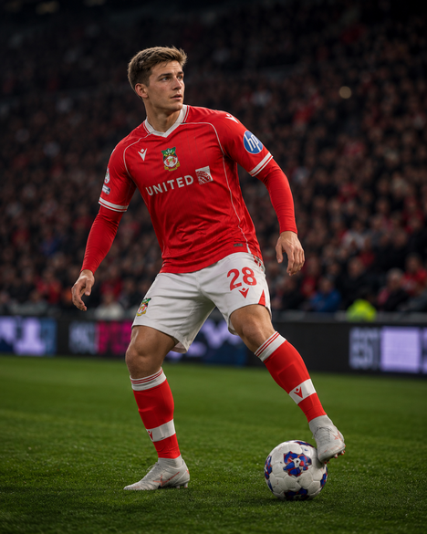

Milán Vitális
CM/CDM
25Age
5'10"Height
RightFoot
74OVR
Important · Contract: 2y1m
Profile
A Hungarian central midfielder born in Nyíregyháza, Vitális came through Győri ETO's academy and made his professional debut there in 2019. Since 2022 he has been with DAC 1904 Dunajská Streda in Slovakia, with loan spells back at Győr along the way, developing into a reliable box-to-box presence.
Real career confirmed through DAC Dunajská Streda/Győri ETO. No real transfer to Wrexham exists — FC26 licenses his stats/likeness, but the Wrexham move is a career-mode simulation. PlayStyles tab not yet screenshotted for this session.
Attributes
74PAC
67SHO
74PAS
73DRI
64DEF
72PHY
Physical
Acceleration76
Agility72
Balance80
Jumping73
Sprint Speed73
Stamina81
Strength70
Mental
Aggression67
Att. Position68
Composure59
Interceptions62
Reactions74
Vision73
Technical
Ball Control75
Crossing72
Curve68
Def. Awareness62
Dribbling73
FK Accuracy65
Finishing68
Heading Acc.57
Long Pass76
Long Shots72
Penalties56
Short Pass77
Shot Power64
Slide Tackle62
Stand Tackle70
Volleys61
Skill Moves★★★★★
Weak Foot★★★★☆
Roles (+/++)1
2027/28 Season
1Appearances
0Goals
0Assists
6.0Avg Rating
Last 1
MAL
Career
2025/26
WrexhamEFL Championship
3 Apps · 1 Goals
2026/27
WrexhamPremier League & FA Cup
29 Apps · 1 Goals
2027/28
WrexhamEuropean International Cup
1 Apps · 0 Goals
Movement
Joined Wrexham2026-04-18 from Free Agent · $0